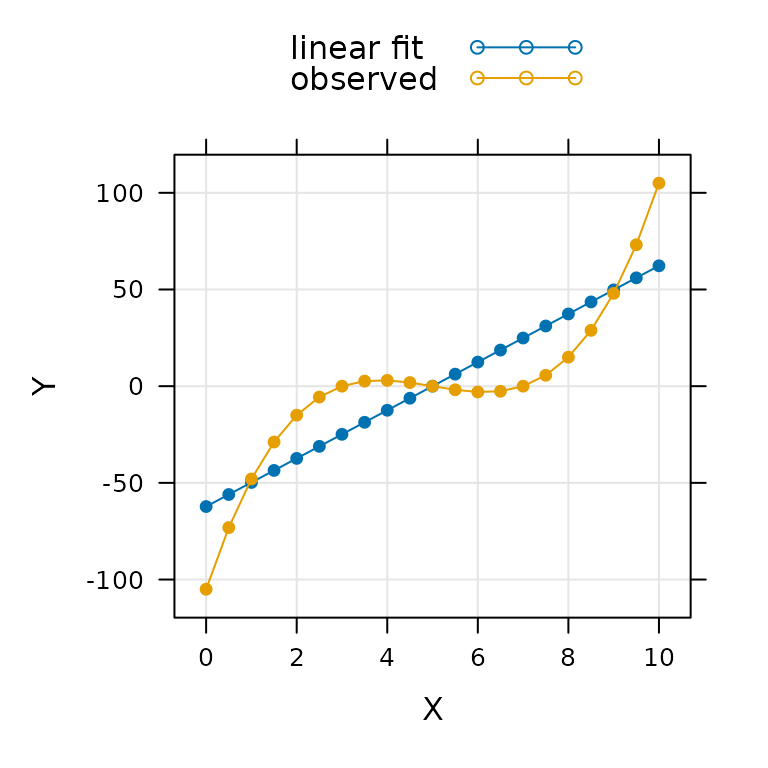

Developing a Data Analysis Pipeline
Source:vignettes/developing_a_data_analysis_pipeline.Rmd
developing_a_data_analysis_pipeline.RmdOverview
The main purpose of the PhotoGEA package is to provide tools for creating a “data analysis pipeline” for photosynthetic gas exchange data. Although the base version of R coupled with popular packages like lattice and ggplot2 provides an excellent set of general tools for data analysis, it is not specialized for gas exchange data, and using it for this purpose can sometimes be tedious because it usually requires writing various customized functions. PhotoGEA is designed to address these gaps by providing several specialized functions related to photosynthetic gas exchange data. By using these functions, you can spend more time extracting important information from your data and less time writing code.
In this vignette, we will describe the most important functions in PhotoGEA and how they relate to a general data workflow or “pipeline.” The description given here will be general, but more detailed examples can be found in the other vignettes such as Analyzing Ball-Berry Data. We will also discuss some general strategies for writing scripts that are customized for your own data and preferences.
Key Steps in Analyzing Data
It is convenient to break up the process of “data analysis” into four key steps:
- Translation: Converting data from its original state into a more convenient format that can be understood by a piece of analysis software.
- Validation: Ensuring the data meets basic requirements for quality and consistency.
- Processing: Performing operations to extract new information from the data such as calculating the values of new quantities or fitting curves.
- Synthesis: Drawing conclusions from the data, commonly done by applying statistical operations such as computing averages across groups or determining whether observed differences between groups are significant.
A “data analysis pipeline” refers to a relatively simple and repeatable way to perform each of these steps on a set of data. In the following sections, we will explain how the PhotoGEA package, in conjunction with base R and a few other popular packages, can be used to accomplish each of these steps.
Note: Documentation for any function mentioned in this vignette can be obtained through R’s built-in help system, which can be accessed using the ? command. For example, to get more information about the read_licor_file function, type ?read_licor_file in the R terminal.
Translation
Since we are working exclusively in R, translation refers to the process of creating R objects from instrument log files. PhotoGEA currently includes two core functions related to translation:
-
read_licor_file: Creates an R data object from a Microsoft Excel file created by a Licor LI-6800 portable gas exchange measurement system. -
read_tdl_file: Creates an R data object from a data file created by a tunable diode laser measurement system.
Both of these functions produce “extended data frame” (exdf) objects in R. The exdf class is very similar to a regular data frame, with the main difference being that an exdf object keeps track of the units associated with each column. This data structure provides several key benefits when analyzing gas exchange data, and more information is available in the Working with Extended Data Frames vignette.
It is often the case that a full data set is spread across multiple files. Because of this, translating data into R often involves combining multiple exdf objects (one from each file) together into one object that holds all of the data. To help with this, the PhotoGEA package provides several functions that can be used to select files via dialog windows:
choose_input_files-
choose_input_licor_files(only available on Microsoft Windows) -
choose_input_tdl_files(only available on Microsoft Windows)
It also provides the identify_common_columns function, which can be used along with rbind to easily combine a set of exdf objects. This operation is described in the Combining Data From Several Files section of the Working with Extended Data Frames vignette.
The process of translation “sets the stage” for the validation, processing, and synthesis steps in the sense that it determines the structure of the data. In other words, because these translation functions produce exdf objects, many of the other functions used in the remaining data analysis steps are also designed to work with exdf objects.
Validation
There is a phrase that originated in computer science but applies to many human endeavors, including data analysis: “Garbage in, garbage out.” In this context we can understand it to mean that any processing or synthesis we apply to our data will produce meaningless results if the data itself does not meet certain requirements for quality and consistency.
As an example, we will try fitting a straight line to a set of curved data:
# Generate some data using a cubic function
X <- seq(from = 0, to = 10, length.out = 21)
Y <- (X - 3) * (X - 5) * (X - 7)
# Fit a linear model to the data
linear_fit <- lm(Y ~ X)
# Plot the fit results
xyplot(
linear_fit$fitted.values + linear_fit$model$Y ~ linear_fit$model$X,
type = 'b',
pch = 16,
auto = TRUE,
grid = TRUE
)
In this case, the fitting procedure does not report any errors, and it even returns a fairly high value of R2 (0.7540145), but it is clear that a linear model is not applicable to this data. In other words, this is a case of “garbage in,” and we have produced a set of “garbage out.”
The goal of data validation is to ensure that any subsequent processing is appropriate; in other words, to avoid a “garbage in” scenario. Validation often consists of three parts:
- Ensuring that the data set is properly organized into subsets (if applicable).
- Identifying any problematic points in the data set.
- “Cleaning” the data set by removing those points.
There are many ways to validate data, and methods can broadly be categorized as automated vs. manual and objective vs. subjective. Here are a few examples:
- Plotting the raw data to locate abnormal points is an example of a manual and subjective form of validation, since it requires you to visually take a look.
- Removing points from the raw data where the Li-6800’s stability criteria were not met is an example of automated and objective validation, since it can proceed without any judegement from a human.
Typically, best results are achieved using a mix of multiple forms of validation. The PhotoGEA package includes several functions to help with data validation:
-
check_licor_data: If a data set represents multiple “response curves” measured by a Licor, this function can be used to make sure that each response curve can be properly located and that all curves follow the same sequence of “driving” variable values. -
organize_response_curve_data: Again, if a data set represents multiple “response curves” measured by a Licor, this function can be used to remove certain points from each curve and to reorder the data in a convenient way for plotting. -
identify_tdl_cycles: If a data set represents measurements from a tunable diode laser, this function can be used to identify complete cycles within the data as the gas handling system periodically measures gas from multiple lines. -
remove_points: This function simplifies the process of removing individual points or even entire response curves from a data set if they are found to be unreliable. -
exclude_outliers: This function can be used to remove points where measurement conditions are unusual; for example, if a leaf temperature value recorded by a Li-6800 is significantly different from the recorded temperatures for the other points in a response curve.
In addition to these functions, there are more basic operations for subsetting and plotting that can be used to help with validation; see the Working with Extended Data Frames vignette for more details about subsetting and plotting data from exdf objects.
Processing
In the processing step, new information is extracted from the raw data in the data set. The PhotoGEA package includes many functions that are specialized for processing photosynthetic gas exchange data. Broadly, they fall into two types:
- Functions that calculate the values of new variables from the values of ones already included in the data set.
- Functions that apply a fitting procedure to single response curves within the full data set.
In general, the “processing” step will require several of these functions, and will depend strongly on the type of measurements that were made; for example, A-Ci curves measured from C3 plants will require a different type of processing than A-Ci curves measured from C4 plants.
All of these functions are designed to be applied to exdf objects. In this case, exdf objects provide a large advantage over regular data frames because they include information about units; in fact, all of these functions will check the units of any required variables before proceeding to make sure the results are correct.
Functions for Calculating New Variable Values
The PhotoGEA package includes the following functions for calculating the values of new variables from the values of variables that already exist in the data set:
-
calculate_gas_properties: Calculates gas properties that are not included in the default Licor log files, such as the H2O concentration at the leaf surface and the stomatal conductance to CO2. -
calculate_ball_berry_index: Calculates the Ball-Berry index from values of net assimilation, relative humidity at the leaf surface, and CO2 concentration at the leaf surface.
(This list is not exhaustive; instead, it only includes functions for which documentation has been written.)
These functions generally treat each row in an exdf object as an independent observation, and so they can be applied to objects that include data from many plants or response curves.
Functions for Fitting Response Curves
The PhotoGEA package includes the following functions for fitting individual response curves:
-
fit_ball_berry: Calculates a linear fit of stomatal conductance to H2O vs. the Ball-Berry index. -
fit_c3_aci: Calculates a nonlinear fit of net CO2 assimilation vs. chloroplastic CO2 concentration.
(This list is not exhaustive; instead, it only includes functions for which documentation has been written.)
These functions generally assume that the input exdf object represents a single response curve, and they return both the optimized parameter values and the fitted values of the measured varaibles; for example, fit_ball_berry performs the fit on a single Ball-Berry curve and returns the Ball-Berry intercept, the Ball-Berry slope, and the fitted values of stomatal conductance.
These functions cannot be applied directly to an exdf object that contains a full set of multiple response curves, because they assume that their input is a single response curve. However, they can be used in conjunction with the by and consolidate functions to automatically split a large exdf into individual curves, apply the fitting function to each curve, and combine the results from each fit; see the Processing Multiple Pieces of an Extended Data Frame section of the Working with Extended Data Frames vignette for more details about doing this.
Synthesis
In the synthesis step, statistical operations are used to draw conclusions about the data, and visualizations are generated to make them easier to understand. The PhotoGEA package includes a few tools for basic operations:
-
exclude_outliers: This function splits anexdfobject into subsets according to the values of one or more identifier columns, determines any rows in each subset where the value of a certain column is an outlier, and removes those rows. For example, this function could be used to “clean” the output from a Ball-Berry fitting procedure by excluding curves from each species where the Ball-Berry slope is an outlier. -
basic_stats: This function splits anexdfobject into subsets according to the values of one or more identifier columns, and then calculates the mean and standard deviation for each applicable column in the object. For example, this function could be used to calculate the average value of the Ball-Berry slope and intercept for each species present in a data set. -
barchart_with_errorbars: This function can be used to create a barchart where the height of each bar is the average value from a set of measurements and the error bars are determined from the standard error. -
xyplot_avg_rc: This function can be used to plot average response curves created by averaging individual curves measured from multiple plants.
More complex statistical operations can be performed with functions from other R packages such as onewaytests or DescTools.
Creating Data Analysis Scripts
An R script is essentially just a collection of R commands stored in a plain-text document, usually with a .R extension. The commands in the script can be copied and pasted into the R terminal to run the code, or the code can be executed automatically using the source function. Writing scripts can save a lot of time by making code more reusable, and it can serve as a record of the exact steps you used while analyzing your data.
The PhotoGEA package includes several vignettes that go through detailed examples of data analysis, and the end of each of these vignettes includes a collection of all the code used in the vignette. This code is designed to be the start of a script. You are encouraged to copy it and make any necessary modifications that might be required to apply it to your own data. This is a great way to get started with analyzing data in R.
In general, there are two types of scripts that you might consider making:
- General-purpose scripts that can apply to many different data sets.
- Narrow scripts that only apply to one particular data set.
General-Purpose Scripts
A general-purpose script would be a script that is designed to apply to a particular type of data (for example, C3 CO2 response curves) but not a particular set of data.
- This kind of script would only include minimal data validation because the process of “cleaning” the data is often specific to a particular data set.
- This kind of script would avoid hard-coding any particular file names; instead, it would make use of the
choose_input_files,choose_input_licor_files, andchoose_input_tdl_filesfunctions so that it can be flexibly applied to different groups of data files.
The main reason to use a script like this would be to take a quick first look at a new set of data. If your script is well-written and you always include the same “identifying” user constants in your Licor files (e.g. species, event, replicate, etc), then it should be possible to do a basic investigation of your data in just a few minutes.
As you begin to analyze different types of data, you may develop a collection of general purpose scripts. It is recommended to store this in a dedicated directory that does not include any data files.
Narrow Scripts
A narrow script would be designed to apply to a particular set of data.
- This kind of script would include data cleaning steps that only apply to one set of data.
- This kind of script would use hard-coded file names to clarify which files it should be used with, and it would typically be stored in the same directory as its corresponding data files.
Often, a narrow script can be formed by copying a general-purpose script and then modifying it to hard-code file names and include data cleaning steps.
The main reason to use a script like this would be to create a reproducible record of the exact steps you took to analyze the data. This way, you will never forget what you did. If you need to make a change to the analysis, it will be simple to just modify part of this script. Trust me: this will save a lot of time for your future self.
In addition to saving your time, this kind of script will let you easily share your analysis with other researchers. In fact, a dedicated analysis script that specifies the versions of each package it uses can later be included with your data when you publish, making it simple to fulfill the requirements for “open science.” There is a great deal of research showing that papers with easily reproducible analysis (facilitated by the availability of data and scripts) is cited more often. For example, see the following: